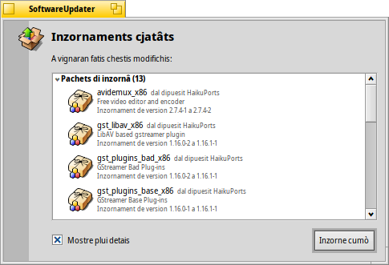

SoftwareUpdater
SoftwareUpdater
| Deskbar: | ||
| Posizion: | /boot/system/apps/SoftwareUpdater | |
| Impostazions: | ~/config/settings/SoftwareUpdater_settings |
SoftwareUpdater al controle in ducj i dipuesits atîfs (viôt preferencis dai Dipuesits) inzornaments pai pachets instalâts, includûts i inzornaments dal sisteme Haiku. Al discjarie e al instale i inzornaments disponibii intun colp sôl.
Dopo che si lu à inviât, SoftwareUpdater al controle se a esistin inzornaments pai pachets e ju mostre intune cu lis lôr gnovis versions e une curte descrizion. Tu puedis dîsi: par includi il non dal dipuesit par ogni pachet e mostrâ dutis dôs lis versions dai pachets, chê vecje e chê gnove.
al tacarà a discjariâ ducj i pachets e la lôr consecuente instalazion.
In base ai pachets che a son stâts inzornâts, si varà di tornâ a inviâ Haiku par fâ in mût che si completi il procès di inzornament. Par ce che al rivuarde lis aplicazions, al baste dome tornâ a inviâlis, invezit lis modifichis a Haiku stes par deventâ efetivis, a podaressin vê bisugne che il sisteme si torni a inviâ.